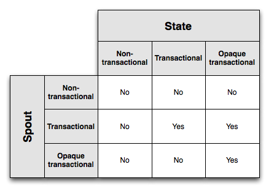

Tridentには、ステートフルなソースからの読み書き用のfirst-classの抽象があります。状態は、メモリ内に保持されつつHDFSによってバックアップされるなど、トポロジの内部にあってもよく、MemcachedまたはCassandraのようなデータベースに外部的に格納されていても構いません。どちらの場合でもTrident APIに違いはありません。
Tridentは、フォールトトレラントな方法で状態を管理し、再試行や障害が発生しても状態の更新が冪等であるようにします。これにより、各メッセージがどのようにexactly-onceに処理されるか、Tridentのトポロジについて推論することができます。
状態の更新は、さまざまなレベルのフォールトトレランスで行うことができます。それらについて考える前に、exactly-onceセマンティクスを達成するために必要な技を示す例を見てみましょう。ストリームの集計を行い、累積カウントをデータベースに格納したいとします。今は、カウントを表す単一の値をデータベースに格納し、新しいタプルを処理するたびにカウントを増やすとします。
障害が発生すると、タプルがリプレイされます。これは、状態の更新(または副作用があるもの)を行うときに問題を引き起こします - 以前にそのタプルに基づいて状態を正常に更新したことがあるかどうかわかりません。おそらく、あなたは前にそのタプルを処理したことがなかったはずで、その場合、カウントをインクリメントするべきです。おそらく、あなたはタプルを処理してカウントを増やすのに成功しましたが、タプルは別のステップで処理に失敗しました。この場合、カウントをインクリメントするべきではありません。または、おそらく前にそのタプルを見たことがありますが、データベースを更新するときにエラーが発生しました。この場合、データベースを更新するべきです。
このように、カウントをデータベースに格納するだけでは、このタプルが以前に処理されたかどうかはわかりません。正しい判断を下すためには、より多くの情報が必要です。 Tridentは、exactly-onceの処理セマンティクスを達成するのに十分な以下のセマンティクスを提供します:
これらのプリミティブを使用すると、状態の実装は、タプルのバッチが以前に処理されたかどうかを検出し、一貫した方法で状態を更新するための適切なアクションを実行できます。実行するアクションは、各バッチの内容について入力Spuutが提供する正確性のセマンティクスに依存します。フォールトトレランスに関するSpoutの種類は、"non-transactional", "transactional"と"opaque transactional"の3種類があります。同様に、フォールトトレランスに関する状態の種類は、"non-transactional", "transactional"と"opaque transactional"の3種類があります。それぞれのSpoutの種類を見て、どのような種類のフォールトトレランスでそれぞれを達成できるかを見てみましょう。
Tridentはタプルを小さなバッチとして処理し、各バッチには一意のトランザクションIDが与えられることを思い出してください。Spoutの特性は、各バッチに含まれているものについて保証できることによって変わります。transactional spoutには、次の特性があります:
これは分かりやすいSpoutの種類です。ストリームは決して変化しない固定のバッチに分割されています。storm-contribにはKafkaのtransactional spoutの実装があります。
あなたは疑問に思うかもしれません - どうして常にtransactional spoutを使用しないのか？それは簡単で理解しやすいです。1つの理由は、必ずしもフォールトトレラントでなければならないなわけではないからです。たとえば、TransactionalTridentKafkaSpoutの仕組みは、特定のtxidのバッチには、あるトピックについてのすべてのKafkaのパーティションから来るタプルを含んでいることを前提としています。一度バッチがemitされると、バッチが将来において再度emitされるたびに、transactional spoutのセマンティクスを満たすために全く同じ集合のタプルをemitする必要があります。TransactionalTridentKafkaSpoutからバッチがemitされ、バッチに対する処理に失敗し、同時にKafkaのノードの1つがダウンしたとします。これで、以前と同じバッチをリプレイすることができなくなり(ノードがダウンしてトピックの一部のパーティションが使用できなくなったため)、処理が停止します。
これは、"opaque transactional"Spoutが存在する理由です - ソースとなるノードが失われてもフォールトトレラントでありながら、exactly-onceの処理セマンティクスを実現できます。我々は次のセクションでそれらのSpoutをカバーします。
(注記 - Kafkaがレプリケーションをサポートすると、ノード障害に対してフォールトトレラントなtransactional spoutを持つことは可能ですが、その機能はまだ存在しません。)
"opaque transactional"なspoutについて見る前に、transactional spoutに対してexactly-onceのセマンティクスを持つState実装をどのように設計するかを見てみましょう。このStateの種類は"transactional state"と呼ばれ、与えられたtxidが常に同じタプルの集合に関連付けられているという事実を利用します。
トポロジが単語数を計算し、単語数をkey/valueデータベースに保存するとします。キーは単語になり、バリューにはカウントが含まれます。バリューに数だけを格納するだけでは、タプルのバッチを処理したかどうかを知るには不十分であることについて見てきました。代わりに、データベースにトランザクションIDとカウントをアトミックな値として格納することができます。その後、カウントを更新する際に、データベースのトランザクションIDと現在のバッチのトランザクションIDを比較すれば十分です。それらが同じであれば、更新をスキップします - 強い順序付けのため、データベースの値に現在のバッチの結果が含まれていることがわかります。それらが異なる場合は、カウントを増やします。このロジックは、txidのバッチは決して変更されないこと、また、Tridentが状態更新がバッチ間で順序付けされることを保証しているため成立します。
なぜこの設計が機能するか例で考えてみましょう。次のタプルのバッチで構成されるtxid 3を処理しているとします:
["man"]
["man"]
["dog"]
データベースが現在、次のキーと値のバリューのペアを保持しているとします:
man => [count=3, txid=1]
dog => [count=4, txid=3]
apple => [count=10, txid=2]
"man"に関連付けられたtxidはtxid 1です。現在のtxidは3であるため、処理しようとしているバッチのタプルはカウントに含まれていないことがわかります。このため、処理を続けて、カウントを2つ増やしてtxidを更新することができます。一方、"dog"のtxidは現在のtxidと同じです。したがって、現在のバッチからのインクリメントがデータベース内で"dog"キー用に既に含まれていることがわかります。したがって、アップデートをスキップすることができます。更新が完了すると、データベースは次のようになります:
man => [count=5, txid=3]
dog => [count=4, txid=3]
apple => [count=10, txid=2]
では、opaque transactional spoutと、その種類のSpoutの状態を設計する方法を見てみましょう。
前に説明したように、opaque transactional spoutは、タプルのバッチに対するtxidが一定のままであることを保証することはできません。opaque transactional spoutには、次の特性があります:
OpaqueTridentKafkaSpoutは、この特性を持ち、Kafkaのノードを失うことにフォールトトレラントなSpoutです。OpaqueTridentKafkaSpoutがバッチをemitするときはいつでも、最後のバッチがemitを完了したところからemitを開始します。これにより、タプルがスキップされたり、複数のバッチによって正常に処理されたりすることはありません。
opaque transactional spoutでは、データベース内のトランザクションIDが現在のバッチのトランザクションIDと同じであれば状態更新をスキップするトリックを使用することはもはや不可能です。これは、状態の更新の間にバッチが変更された可能性があるためです。
あなたができることは、より多くの状態をデータベースに格納することです。値とトランザクションIDをデータベースに格納するのではなく、値、トランザクションID、および直前の値をデータベースに格納します。再度、データベースにカウントを格納する例を使用してみましょう。バッチの部分カウントが"2"であり、状態更新を適用するときだとします。データベースの値が次のようになっているとします:
{ value = 4,
prevValue = 1,
txid = 2
}
現在のtxidが3で、データベース内のtxidと異なるとします。この場合、"prevValue"を"value"に設定し、部分カウントだけ"value"を増やして、txidを更新します。 新しいデータベース値は次のようになります:
{ value = 6,
prevValue = 4,
txid = 3
}
今度は、現在のtxidが2で、データベースの内容と同じであるとします。データベースの"value"には現在のバッチと同じtxidである前のバッチからの更新が含まれており、そのバッチは今回のバッチと異なる可能性があるので、以前のバッチによって適用された値を無視する必要があります。この場合、あなたの部分的なカウントによって "prevValue"をインクリメントして、新しい"value"を計算します。そして、データベースの値を次のように設定します:
{ value = 3,
prevValue = 1,
txid = 2
}
これは、Tridentによって提供されたバッチの強力な順序付けのために機能します。Tridentが状態更新のために新しいバッチに移動すると、それは決して前のバッチに戻ることはありません。また、opaque transactional spoutはバッチ間のオーバーラップがないことを保証しているので - 各タプルは1つのバッチで正常に処理されます - 前の値に基づいて安全に更新できます。
Non-transactional spoutは、各バッチの内容を保証するものではありません。したがって、at-most-onceで処理することがあります。この場合、失敗したバッチの後にタプルは再試行されません。または、タプルが複数のバッチで正常に処理される、at-least-onceで処理が行われる可能性があります。この種類のSpoutには、exactly-onceセマンティクスを達成する方法はありません。
以下の図は、Spout/Stateのどの組み合わせがexactly-onceのメッセージングセマンティクスを可能にするかを示しています:

Opaque transactional stateはフォールトトレランス性が最も強力ですが、これはtxidと2つの値をデータベースに格納するコストがかかります。Transactional statesでは、データベース内の状態は少なくて済みますが、transactional spoutでしか動作しません。最後に、non-transactional stateはデータベース内の状態についての要求は最小ですが、exactly-onceのセマンティクスは実現できません。
選択すべきStateとSpoutの種類は、フォールトトレランスとストレージコストのトレードオフです。究極的に、アプリケーションの要件によって、どの組み合わせが適切かが決まります。
あなたは、exactly-onceのセマンティクスを達成するために必要なものの複雑さを見てきました。Tridentの素晴らしい点は、State内のすべてのフォールトトレランスロジックを内部化していることです - ユーザーは、txidの比較、データベース内への複数の値の格納などを扱う必要はありません。次のようなコードを書くことができます:
TridentTopology topology = new TridentTopology();
TridentState wordCounts =
topology.newStream("spout1", spout)
.each(new Fields("sentence"), new Split(), new Fields("word"))
.groupBy(new Fields("word"))
.persistentAggregate(MemcachedState.opaque(serverLocations), new Count(), new Fields("count"))
.parallelismHint(6);
opaque transactional stateを管理するために必要なすべてのロジックは、MemcachedState.opaque呼び出しで内部化されています。さらに、データベースへのラウンドトリップを最小限に抑えるために、更新は自動的にバッチ処理されます。
基底となるStateインターフェイスには2つのメソッドしかありません:
public interface State {
void beginCommit(Long txid); // can be null for things like partitionPersist occurring off a DRPC stream
void commit(Long txid);
}
状態の更新が開始されたときや、状態の更新が終了したときには、txidとともにあなたに通知されます。Tridentは、Stateの仕組み、それを更新する方法、状態の読み出しについてどんなメソッドがあるかについて、何も想定していません。
ユーザーの位置情報を含む自宅のデータベースがあり、それをTridentからアクセスできるようにしたいとします。Stateの実装には、ユーザー情報を取得して設定するメソッドがあります:
public class LocationDB implements State {
public void beginCommit(Long txid) {
}
public void commit(Long txid) {
}
public void setLocation(long userId, String location) {
// code to access database and set location
}
public String getLocation(long userId) {
// code to get location from database
}
}
その後、Tridentタスク内でStateのインスタンスを作成できるStateFactoryをTridentに提供します。LocationDBのStateFactoryは次のようになります:
public class LocationDBFactory implements StateFactory {
public State makeState(Map conf, int partitionIndex, int numPartitions) {
return new LocationDB();
}
}
Tridentは、状態のソースにクエリするTrident操作を記述するQueryFunctionインターフェースと、状態のソースを更新するTrident操作を記述するためのStateUpdaterインターフェースを提供します。たとえば、LocationDBにユーザーの場所を照会する操作"QueryLocation"を作成します。トポロジでどのように使用するかについて説明しましょう。このトポロジが入力ストリームのユーザIDをコンシュームしているとします:
TridentTopology topology = new TridentTopology();
TridentState locations = topology.newStaticState(new LocationDBFactory());
topology.newStream("myspout", spout)
.stateQuery(locations, new Fields("userid"), new QueryLocation(), new Fields("location"))
次に、QueryLocationの実装がどのようになるかを見てみましょう:
public class QueryLocation extends BaseQueryFunction<LocationDB, String> {
public List<String> batchRetrieve(LocationDB state, List<TridentTuple> inputs) {
List<String> ret = new ArrayList();
for(TridentTuple input: inputs) {
ret.add(state.getLocation(input.getLong(0)));
}
return ret;
}
public void execute(TridentTuple tuple, String location, TridentCollector collector) {
collector.emit(new Values(location));
}
}
QueryFunctionは2つのステップで実行されます。まず、Tridentは読み取りのバッチをまとめてbatchRetrieveに渡します。この場合、batchRetrieveは複数のユーザーIDを受け取ります。batchRetrieveは、入力タプルのリストと同じサイズの結果のリストを返すことが期待されます。結果リストの最初の要素は、最初の入力タプルの結果に対応し、2番目の要素は2番目の入力タプルの結果に対応し、以下同様です。
前のコードは、Tridentが一度に1つずつLocationDBを照会するだけなので、Tridentが行うバッチ処理を利用していないことがわかります。だから、LocationDBを書くより良い方法は次のようになります:
public class LocationDB implements State {
public void beginCommit(Long txid) {
}
public void commit(Long txid) {
}
public void setLocationsBulk(List<Long> userIds, List<String> locations) {
// set locations in bulk
}
public List<String> bulkGetLocations(List<Long> userIds) {
// get locations in bulk
}
}
そうすると、次のようにQueryLocation関数を記述できます:
public class QueryLocation extends BaseQueryFunction<LocationDB, String> {
public List<String> batchRetrieve(LocationDB state, List<TridentTuple> inputs) {
List<Long> userIds = new ArrayList<Long>();
for(TridentTuple input: inputs) {
userIds.add(input.getLong(0));
}
return state.bulkGetLocations(userIds);
}
public void execute(TridentTuple tuple, String location, TridentCollector collector) {
collector.emit(new Values(location));
}
}
このコードは、データベースへのラウンドトリップを減らすことによって、はるかに効率的になります。
状態を更新するには、StateUpdaterインタフェースを使用します。以下に新しい位置情報でLocationDBを更新するStateUpdaterがあります:
public class LocationUpdater extends BaseStateUpdater<LocationDB> {
public void updateState(LocationDB state, List<TridentTuple> tuples, TridentCollector collector) {
List<Long> ids = new ArrayList<Long>();
List<String> locations = new ArrayList<String>();
for(TridentTuple t: tuples) {
ids.add(t.getLong(0));
locations.add(t.getString(1));
}
state.setLocationsBulk(ids, locations);
}
}
Tridentトトポロジでこの操作を使用する方法は次のとおりです:
TridentTopology topology = new TridentTopology();
TridentState locations =
topology.newStream("locations", locationsSpout)
.partitionPersist(new LocationDBFactory(), new Fields("userid", "location"), new LocationUpdater())
partitionPersist操作は、状態のソースを更新します。StateUpdaterはStateと、そのStateへの更新を伴うタプルのバッチを受け取ります。このコードは、入力タプルからユーザーIDとlocationを取得し、状態を一括して設定します。
partitionPersistは、Tridentのトポロジによって更新されるlocation dbを表すTridentStateオブジェクトを返します。この状態は、トポロジのどの場所でもstateQuery操作で使用できます。
StateUpdatersにはTridentCollectorが与えられていることもわかります。このコレクターにemitされたタプルは、"new values stream"に移動します。この場合、そのストリームにemitするのは特に興味深いことでありませんが、データベースのカウントを更新する場合などは、更新されたカウントをそのストリームにemitすることができます。その後、TridentState#newValuesStreamメソッドを使用して、新しい値ストリームにアクセスしてさらに処理することができます。
Tridentには、persistentAggregateという状態を更新する別の方法があります。これはストリーミングのワードカウントの例で使用されています:
TridentTopology topology = new TridentTopology();
TridentState wordCounts =
topology.newStream("spout1", spout)
.each(new Fields("sentence"), new Split(), new Fields("word"))
.groupBy(new Fields("word"))
.persistentAggregate(new MemoryMapState.Factory(), new Count(), new Fields("count"))
persistentAggregateは、Tridentのaggregatorを使用して状態のソースに更新を適用する方法を知っている、partitionPersistの上に構築された追加の抽象です。この場合、これはグループ化されたストリームなので、Tridentに渡されるstateが"MapState"インタフェースを実装していることが期待されます。グループ化フィールドは状態のキーになり、集計結果は状態のバリューになります。"MapState"インターフェースは次のようになります：
public interface MapState<T> extends State {
List<T> multiGet(List<List<Object>> keys);
List<T> multiUpdate(List<List<Object>> keys, List<ValueUpdater> updaters);
void multiPut(List<List<Object>> keys, List<T> vals);
}
グループ化されていないストリーム(global aggregation)にアグリゲーションを実行すると、TridentはStateオブジェクトが"Snapshottable"インターフェイスを実装することを期待します。
public interface Snapshottable<T> extends State {
T get();
T update(ValueUpdater updater);
void set(T o);
}
MemoryMapStateや MemcachedStateはそれぞれこれらの両方のインタフェースを実装しています。
TridentはMapStateの実装を容易にし、ほぼすべての作業を行います。OpaqueMapクラス、TransactionalMapクラス、およびNonTransactionalMapクラスは、それぞれのフォールトトレランスロジックを実行するためのすべてのロジックを実装します。これらのクラスに、それぞれのキー/バリューのmultiGetsとmultiPutsを行う方法を知っているIBackingMapの実装を提供するだけです。IBackingMapは次のようになります:
public interface IBackingMap<T> {
List<T> multiGet(List<List<Object>> keys);
void multiPut(List<List<Object>> keys, List<T> vals);
}
OpaqueMapは値にOpaqueValueを指定してmultiPutを呼び出し、TransactionalMapは値にTransactionalValueを指定し、NonTransactionalMapsはトポロジからオブジェクトを渡すだけです。
また、Tridentはマップのキー/バリューについて自動的にLRUキャッシングを行うCachedMapクラスも提供します。
最後に、TridentはSnapshottableMapクラスを提供し、グローバルな集約を固定キーに格納することでMapStateをSnapshottableオブジェクトに変換します。
MemcachedStateの実装を見て、MapStateの高性能実装を実現するためにこれらのユーティリティをどのように組み合わせるかを見てみましょう。MemcachedStateでは、opaque transactional, transactional, ならびに non-transactionalのセマンティクスを選択できます。